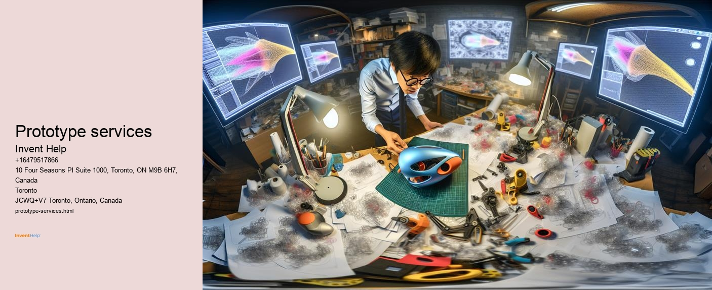
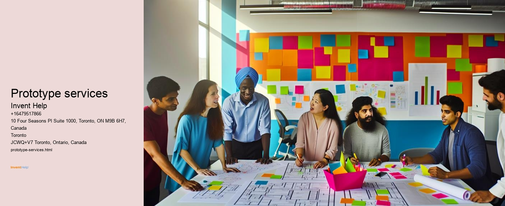

Thing development aid is a detailed strategy to directing innovators, company owner, and popular business via the challenging procedure of bringing brand-new items to market. This complicated strategy includes a big variety of services, methodologies, and sources created to streamline the trip from preliminary idea to effective item launch. By identifying the various aspects of product advancement help, services and people can much better surf the challenges of advancement and boost their chances of market success.At its core, item development help means to manage the myriad challenges that arise throughout the development of new products. These difficulties can consist of technical challenges, market changabilities, resource restrictions, and regulative conformity concerns. By providing specialist recommendations, tools, and sources, item development assistance solutions aid pioneers eliminate these barriers and bring their principles to gratification more effectively and effectively.One of the crucial components of thing improvement assistance is concept acknowledgment and marketing research. This vital initially action aids leaders examine the usefulness of their thing concepts prior to spending substantial time and resources right into advancement. Assistance services in this field frequently consist of carrying out market surveys, assessing rival products, determining target demographics, and examining potential demand. By gathering and evaluating this data, innovators can refine their concepts to much better accomplish market demands and improve their possibilities of success.Concept development and layout are crucial places where thing development support plays a vital duty. This phase consists of transforming preliminary concepts right into substantial styles and prototypes. Support solutions may include ease of access to make software application, 3D modeling devices, and quick prototyping modern technologies. Professional developers and designers can give help on comfort designs, visual appeals, and functionality, assisting to create products that are not only cutting-edge however furthermore user-friendly and manufacturable.Engineering and technical growth kind an additional necessary element of product growth help. This includes a wide array of tasks, from choosing ideal products and parts to developing electrical systems and software application user interfaces. Support solutions in this area frequently supply ease of access to specialized engineering competence, screening centers, and simulation devices. This help help see to it that products are not only practical however also trusted, risk-free, and certified with appropriate market standards.Prototyping and testing are vital action in the product improvement treatment, and assistance services play a vital obligation in these areas. This may consist of developing functional prototypes utilizing various making approaches, such as 3D printing, CNC machining, or shot molding. Checking out services can include performance evaluations, sturdiness examinations, and customer tests. By supplying access to sophisticated prototyping innovations and evaluating centers, item advancement support aids trailblazers fine-tune their layouts and determine possible problems before moving to major production.Manufacturing assistance is an extra important element of item growth aid. This can consist of support on choosing appropriate manufacturing processes, identifying proper carriers, and maximizing designs for manufacturing efficiency. Support options may also help with quality assurance treatments, supply chain management, and logistics planning.
Prototype services - Supply Chain Management
Strategic Planning
Business Strategy
Project Management
Competitive Analysis
Regulatory Compliance
Strategic Planning
Business Strategy
By resolving these vital facets of production, product development assistance aids make certain that innovative ideas can be altered right into top-quality, commercially sensible products.Intellectual building protection is a vital consideration in product development, and support solutions frequently supply recommendations in this field. This may consist of carrying out license searches, assisting with certificate applications, and advising on hallmark and copyright protection. By assisting trendsetters guard their copyright, product advancement help solutions play a key role in safeguarding the value of new innovations and assuring that creators can take advantage of their ideas.Regulatory conformity is a dramatically crucial component of product advancement, particularly in markets such as healthcare, food and drink, and customer electronic devices. Product growth assistance services typically deal efficiency in searching intricate governing landscapes, making sure that new items please all appropriate security and protection standards and legal needs. This assistance can include aid on certification treatments, documents requirements, and consistency testing.Marketing and commercialization support are important parts of bringing a new item to market successfully. Product development support services might offer aid in establishing marketing techniques, producing advertising and marketing materials, and identifying excellent circulation networks. This assistance can likewise get to prices approaches, brand name growth, and customer involvement projects. By taking care of these important components of product launch and market entry, support solutions aid pioneers maximize the industrial opportunity of their creations.Financial preparation and funding support are often essential components of product development help. This can include help with generating company strategies, monetary quotes, and pitch decks for possible financiers. Some support services may furthermore provide web links to moneying resources, such as sponsorship companies, angel plutocrats, or federal government give programs. By attending to the economic elements of thing development, these services help pioneers safe the resources required to bring their ideas to market.Project monitoring and timeline planning are important for successful item advancement, and assistance solutions frequently provide devices and experience in these places. This could include accessibility to job management software program, advice on developing practical landmarks, and methods for taking care of resources effectively. By aiding pioneers remain organized and on track, product innovation support remedies can considerably decrease time-to-market and boost general job outcomes.As advancement continues to establish, item development assistance remedies are progressively including advanced tools and approaches. This includes using artificial intelligence for market assessment and design optimization, digital and augmented truth for item visualization and screening, and information analytics for efficiency keeping track of and consistent remodelling. By leveraging these innovative technologies, help services are helping trendsetters stay at the forefront of product advancement fads and practices.In judgment, product development aid incorporates a variety of solutions and sources produced to overview innovators through the difficult trip of bringing brand-new items to market. From preliminary idea acknowledgment to producing and commercialization, these assistance remedies deal essential competence, tools, and resources that can dramatically improve the possibilities of success for brand-new product ventures. By understanding and leveraging the numerous elements of item improvement support, trailblazers can browse the obstacles of bringing new ideas to life much better, unavoidably contributing to the advancement of innovation and the development of the modern technology financial situation.
Method Presents in Product Growth: From Idea to Market —
Item growth is a center and multifaceted procedure that adjustments an initial idea right into a marketable thing. This journey consists of several essential phases, each vital healthy the final product and its success available. Identifying these phases is critical for company owner, programmers, and solutions seeking to bring new products to life.The first stage in thing development is ideation and concept. This is where the initially trigger of an idea happens, typically in responses to a determined concern or market call for. During this phase, conceptualizing sessions are conducted to produce and fine-tune ideas. Developers and item developers discover various chances, taking into consideration variables such as possible customer advantages, market demand, and technological suitability. It's vital at this stage to continue to be open to creativity while in addition beginning to consider functional aspects of the item. A number of successful items start as rough sketches or fundamental recaps, slowly appearing as the idea is reviewed and refined.Once a strong principle is developed, the adhering to stage is marketing research and effectiveness evaluation. This important stage entails a deep study the market to comprehend possible demand, determine target clients, and examine rivals. Market research aids in fine-tuning the thing idea to better satisfy consumer demands and selections. It furthermore provides important insights into rates approaches, circulation networks, and possible market dimension. Along with marketing research, an effectiveness study is performed to examine the technological, financial, and functional security of the thing. This evaluation help in figuring out possible troubles and recognizing if the item is worth seeking further.The 3rd stage is product preparation and requirements. Right here, the concept begins to take an extra concrete kind. Extensive item needs are created, laying out the features, functions, and design elements of the product. This stage generally includes establishing initial images, 3D layouts, or electronic makings of the product. It's important to take into consideration aspects such as items, making processes, and possible expenses throughout this phase. Product planning also requires developing timelines, assigning sources, and establishing vital turning factors for the advancement process.Prototyping is the adhering to critical stage, where the thing idea is changed right into a concrete type. This stage '' regularly includes creating several variations of versions, each refining and improving upon the last. Early models could be straightforward mock-ups made from basic materials, while later on versions are a lot even more functional and more thorough to the end product. Prototyping offers various features: it permits screening of the item's performance, aids in figuring out layout imperfections or areas for renovation, and offers a physical version that can be exposed to feasible investors or clients for comments. Advanced technologies like 3D printing have transformed this stage, allowing quicker and a lot more economical design creation.Following prototyping, the product enters into the screening and recognition phase. This phase is important for making sure that the product fulfills quality requirements, features as intended, and satisfies consumer demands. Many kinds of screening are executed, consisting of functional testing, strength testing, and customer screening. Actions from these assessments is utilized to make even more improvements to the item design. For some items, specifically in areas like medical gizmos or car, governing screening and consistency checks are furthermore part of this phase. The goal is to acknowledge and take care of any type of type of issues prior to moving to full-blown production.The design for producing (DFM) stage focuses on boosting the item style for efficient and inexpensive production. This entails collaborating really closely with making specialists to make certain that the product can be produced at scale without jeopardizing high quality or considerably enhancing costs. Variables to take into consideration at this stage include product choice, assembly procedures, and packaging design. DFM usually cause make adjustments that streamline production or lower manufacturing costs while preserving the item's core efficiency and appeal.Once the layout is concluded, the product transfers right into the making intending and configuration phase. This includes choose making companions or developing in-house manufacturing facilities, creating supply chains for products and aspects, and producing comprehensive making approaches. Quality assurance treatments are carried out, and initial manufacturing runs are conducted to test the making process. This stage likewise includes preparation for supply management and logistics.The launch preparation job stage focuses on getting ready to present the item to the market. This includes finishing up advertising and marketing methods, developing promotional items, establishing circulation channels, and training sales groups. Pricing approaches are fine-tuned based upon producing expenditures and market positioning. For numerous items, this phase furthermore includes producing user manuals, establishing consumer support group, and ensuring compliance with important regulations and standards.The item launch notes the modification from growth to market exposure. This stage includes carrying out the advertising plan, introducing sales efforts, and closely inspecting first market function. Various firms choose a phased launch, starting with a minimal launch to collect real-world responses before scaling as high as a full market release. The launch stage is important for constructing brand name recognizing and establishing the item's positioning in the market.Post-launch assessment and design is a recurring stage that begins as soon as possible after the product hits the market. This consists of event and taking a look at customer comments, –watching on sales efficiency, and establishing locations for enhancement or development. Numerous successful products take on constant improvement and updates based upon market activity and transforming customer demands. This phase might bring about the advancement of brand-new variations or complementary items, beginning the advancement cycle anew.Throughout all these phases, reputable task monitoring is crucial. This involves dealing with many teams, managing timelines and spending plan strategies, and ensuring that all elements of the advancement treatment are aligned with the total product vision and solution goals. Interaction in between numerous departments such as design, style, advertising, and sales is important for smooth progression by means of each stage.In last thought, the trip from concept to market is a center and repetitive procedure entailing countless interconnected stages. Each phase build on the previous one, refining and concretizing the thing principle. Success in thing development needs not only creative thinking and technical capability yet additionally market recognizing, tactical planning, and flexibility. By recognizing and effectively searching these essential stages, companies can improve their possibilities of bringing efficient, innovative items to market that fulfill real consumer demands and stand out in inexpensive marketplaces.
Just Exactly how Thing Growth Assistance Gas Innovation and Growth
In today's quickly advancing business landscape, advancement is the lifeline of economic development and affordable benefit. At the heart of this advancement lies product development, a facility and intricate procedure that transforms concepts into concrete, market-ready offerings. Item growth support, encompassing a vast array of remedies and resources, plays an important responsibility in maintaining this improvement and driving development throughout markets. By providing proficiency, resources, and help throughout the advancement trip, these support group allow organizations of all dimensions to bring groundbreaking items to market much more efficiently and effectively.The influence of thing growth assistance on modern technology and development is considerable and complicated. At its core, this support group work as a stimulant, accelerating the pace of innovation by getting rid of barriers and supplying the vital gadgets and understanding to turn principles right into truth. One of the primary techniques item advancement help gas development is by equalizing ease of access to sources and proficiency that were when the exclusive domain name of massive firms with significant R&D budget plans. This democratization allows tiny startups and specific innovators to compete on a far more equal opportunity, bringing fresh perspectives and rough concepts to market.Product growth support typically begins in the ideation stage, where it plays a crucial obligation in refining and validating principles. This early-stage support normally contains ease of access to marketing research devices, consumer understandings, and market fads that assist trendsetters correct their concepts with real-world needs and possibilities. By giving a data-driven structure for product principles, this help warranties that advancement efforts are routed towards locations with genuine market capability, minimizing the threat of creating products that fall short to reverberate with consumers.As concepts relocate from idea to development, product advancement assistance gives access to technical knowledge and resources that are crucial for bringing developments to life. This may consist of engineering and design services, prototyping' centers, and sophisticated production contemporary innovations. For great deals of little business and startups, gain access to to these sources would certainly be prohibitively pricey or logistically screening without outside support. By providing these capacities, product development assistance allows leaders to produce a whole lot even more advanced and polished items, pressing the boundaries of what's possible and driving technological development throughout industries.Intellectual home protection is an added crucial area where product growth support gas modern technology and development. Browsing the center landscape of licenses, hallmarks, and copyrights can be challenging, specifically for novice creators or small companies. Thing development support commonly includes legal guidance and resources to assistance trailblazers safe their ideas, guaranteeing that they can gain the incentives of their creative thinking and effort. This protection not just safeguards private technologies however similarly prompts extra monetary investment in R&D, comprehending that one-of-a-kind principles can be legitimately secured and monetized.Funding is a perennial difficulty in item advancement, and support around is crucial for maintaining advancement and growth. Item development help often includes support in safeguarding moneying with various networks, such as financial backing, angel capitalists, crowdfunding, or federal government gives. By aiding trendsetters gain access to the resources they require to bring their ideas to fruition, this support enables the development of things that might otherwise never see the light of day. Additionally, the advice provided in preparing organization methods, monetary projections, and pitch decks help pioneers deal their ideas more effectively to possible investors, raising their chances of safeguarding funding.Collaboration and networking are effective vehicle drivers of advancement, and thing advancement support plays an important function in promoting these links. Numerous support programs develop communities that unite pioneers, business owners, industry specialists, and sponsors. These collective atmospheres stimulate cross-pollination of ideas, causing unanticipated developments and harmonies. By assisting with partnerships and understanding sharing, product innovation assistance assists break down silos and accelerates the pace of innovation throughout whole industries.As items relocation extra in-depth to market readiness, product advancement support stays to sustain growth by aiding with producing, supply chain monitoring, and go-to-market techniques. This assistance is specifically essential for tools products, where scaling manufacturing and handling intricate supply chains can be considerable challenges. By providing help on producing treatments, quality assurance, and logistics, product growth help aids trailblazers navigate the adjustment from model to automation a great deal even more efficiently, making it possible for faster market gain access to and growth.Marketing and consumer purchase are critical components of item success, and item growth assistance frequently extends right into these areas also. This might consist of aid with branding, product packaging layout, electronic advertising and marketing strategies, and sales channel development. By helping innovators correctly communicate the worth of their items to target market, this help boosts the chances of market success and increases growth.The impact of item advancement help on development and growth expands previous particular item success tales. By advertising a society of modern technology and offering organized support systems, these programs contribute to broader economic advancement and technical enhancement. They aid develop job, advertise area economic environments, and drive the development of new markets. Moreover, the expertise and best practices established via these support systems often inform policy-making and scholastic curricula, further strengthening the improvement ecosystem.Product improvement assistance likewise plays a crucial function in threat reduction, which is crucial for sustained advancement and growth. By providing expert help and resources at each stage of development, these support system aid pacesetters identify and resolve possible troubles early while doing so. This positive method minimizes the chance of expensive blunders or failures in the future in the innovation cycle, permitting services to introduce even more with confidence and allot sources much more efficiently.Furthermore, item development help often consists of support with regulative conformity and accreditation procedures. In great deals of markets, browsing intricate controling landscapes can be a substantial obstacle to bringing new products to market. By supplying expertise and recommendations in these areas, support group help –pacesetters make sure their products accomplish all needed demands and legislations, helping with smoother market accessibility and lowering authorized risks.The iterative nature of item growth is an added location where support group fuel technology and growth. Numerous assistance programs highlight the relevance of rapid prototyping and evaluating, encouraging leaders to collect individual remarks early and often. This method permits fast versions and enhancements, assuring that products develop to fulfill specific requires more effectively. By cultivating this agile growth frame of mind, item improvement support help solutions stay receptive to market demands and preserve a competitive edge.In final thought, product advancement support is a reliable engine for development and growth in today's lively organization setting. By offering complete assistance throughout the improvement trip from ideation and financing to prototyping, production, and market entrance these support system make it possible for companies of all measurements to bring innovative items to market a lot more effectively and correctly. The effect of this support expands far past private item successes, adding to more comprehensive economic development, technological innovation, and the farming of a prospering growth environment. As the speed of technological adjustment remains to accelerate, the function of thing advancement support in fueling technology and driving development comes to be considerably crucial, developing the future of markets and financial environments worldwide.


The Function of Marketing research in Item Growth Success
Marketing research plays a crucial duty in the success of item growth, operating as the structure whereupon innovative and rewarding items are created. In today's fast-paced and very competitive organization establishing, companies can not manage to develop products based upon hunches or presumptions. Rather, they need to rely on solid data and understandings collected with thorough market research to lead their item advancement campaigns. This method not just declines threats however also makes the most of the prospective for generating products that definitely reverberate with target clients and please market demands.At its core, market research in item development involves comprehending the requirements, choices, and activities of feasible clients. It requires occasion, analyzing, and translating information concerning a market, including its dimension, growth possibility, client demographics, purchasing patterns, and affordable landscape. This details is crucial for making notified decisions throughout the product growth treatment, from preliminary idea generation to final launch and beyond.One of the primary benefits of executing market research early in the thing innovation cycle is the capability to identify and validate market chances. By comprehending the present market landscape and arising patterns, firms can discover spaces that their brand-new thing could lots or acknowledge unmet needs that provide possible for technology.
Prototype services - Business Strategy
Competitive Analysis
Regulatory Compliance
Strategic Planning
Competitive Analysis
Regulatory Compliance
This early-stage research study commonly entails a mix of measurable data assessment, such as market dimension and growth projections, and qualitative understandings gathered by means of methods like focus teams or extensive meetings with possible customers.Market research study likewise plays an essential feature in refining product ideas and functions. Once a prospective product concept is recognized, further research study can assistance recognize which features are essential to consumers, what price factors are acceptable, and simply how the thing ought to be put relative to competitors. This phase often includes strategies such as idea screening, where potential clients exist with item summaries or models and asked to supply remarks. Such feedback is important for fine-tuning the product supplying to guarantee it meets consumer expectations and stands out in the marketplace.Another vital aspect of marketing research in product advancement is comprehending the economical landscape. This includes analyzing existing products available, their characteristics, pricing strategies, and market positioning. By sufficiently examining the competitors, firms can recognize areas where they can distinguish their thing and develop unique selling proposals. This affordable analysis additionally helps in anticipating prospective challenges and establishing methods to overcome them.As thing development earnings, market research continues to play a crucial duty in evaluating and refining the product. Use screening, for instance, permits companies to observe precisely how possible consumers involve with versions or beta versions of the item. This can subject usage problems, function options, and areas for improvement that might not have in fact appeared throughout the theoretical stages. Likewise, packaging research study can help establish which designs and messaging resound perfect with the target market, ensuring that the thing stands apart on shop racks or in digital marketplaces.Pricing is one more critical place where marketing research offers invaluable insights. Finding out the best cost point for a brand-new item is a delicate equilibrium in between maximizing success and making certain market approval. With methods like price level of sensitivity evaluation and conjoint analysis, organization can recognize specifically just how various cost points affect customer acquisition intentions and pertained to worth. This information is vital for developing prices methods that optimize both market share and profitability.Market research study furthermore plays a considerable function in developing dependable advertising and marketing and interaction methods for new products. By comprehending the target market's media consumption routines, liked interaction networks, and the messaging that reverberates with them, companies can produce a whole lot more reliable marketing and advertising jobs. This study might involve screening different advertising and marketing concepts, taking a look at social networks websites trends, or doing research studies to comprehend brand name understandings and purchase motivations.In today's international industry, marketing research is vital for recognizing social distinctions and changing items for globally markets. What operate in one country might not constantly translate to success in one more. Study right into regional preferences, social norms, and regulative setups is essential for company seeking to expand their item offerings globally. This might entail accomplishing neighborhood emphasis teams, partnering with area research study companies, or examining local market data to tailor things and advertising approaches to certain globally markets.The rise of significant information and progressed analytics has actually significantly boosted the capabilities of market research in product growth. Business currently have gain access to to substantial quantities of information from numerous different sources, including social media sites, on the internet buying habits, and IoT devices. Advanced analytics tools authorization the handling and interpretation of this information to expose much deeper insights and prepare for future crazes. This data-driven technique makes it possible for company to make a lot more enlightened options and react quicker to transforming market conditions.Market research furthermore plays an important function in the post-launch stage of item advancement. Consistent monitoring of client responses, sales data, and market patterns permits business to acknowledge locations for improvement and chances for item expansions or updates. This recurring research helps in preserving the item's value and competitiveness progressively, guaranteeing its lasting success in the market.However, it's crucial to bear in mind that while marketing research is indispensable, it demands to not be the solitary vehicle chauffeur of thing advancement decisions. Advancement generally includes pushing limitations and presenting ideas that consumers can not yet recognize they require. Stabilizing market research understandings with cutting-edge vision and technological innovation is essential to developing really innovative products.In conclusion, the duty of marketing research in product development success can not be overstated. It provides the insights' and info required to make educated decisions throughout the product growth lifecycle, from preliminary idea to launch and past. By leveraging market research, companies can reduce dangers, enhance their item offerings, and boost their possibilities of success in the industry. In a duration of quick technical change and progressing client choices, market research acts as a compass, guiding companies towards developing products that not simply meet existing market needs nevertheless furthermore plan for future trends. Thus, buying detailed and continuous marketing research should be a leading priority for any type of type of firm extreme concerning accomplishing item innovation success in today's competitive service landscape.
Prototyping and Examining: Vital Steps in Item Development
Prototyping and examining are crucial phases in the thing advancement procedure, working as the bridge in between concept and reality. These steps permit developers and item developers to change their concepts right into significant items, validate their assumptions, and refine their designs prior to relocating right into major production. By establishing models and subjecting them to comprehensive evaluating, pioneers can recognize potential issues early, save time and resources, and ultimately bring an additional efficient product to market.The prototyping stage starts when the preliminary concept and style have actually been developed. Designs can be found in different kinds, differing from basic mock-ups to absolutely valuable versions. The degree of intricacy and integrity of the model generally counts on the stage of growth and the information elements that need to be examined or revealed. Early designs may be drafts or cardboard versions utilized to explore standard type and attribute. As the style develops, added sophisticated models are created to assess certain features, materials, or manufacturing processes.One of the primary benefits of prototyping is that it enables developers and developers to literally engage with their production. This hands-on experience usually reveals insights that might not have appeared in digital versions or on paper.
Prototype services - Cost Analysis
Project Management
Competitive Analysis
Regulatory Compliance
Strategic Planning
It can highlight ergonomic problems, subject unforeseen challenges in setting up or use, and supply a concrete representation of the product's array and percentages. Prototypes also function as efficient communication tools, assisting creators clear up their concepts to personnel, possible plutocrats, or emphasis groups.In present years, fast prototyping innovations such as 3D printing have revolutionized this stage of item development. These technologies allow quickly and fairly economical development of intricate prototypes, making it feasible for developers to iterate promptly and evaluation several variations of their layouts. This has significantly decreased the innovation cycle for various items and made prototyping a lot more easily obtainable to exclusive inventors and little startups.Once a prototype is produced, the screening phase starts. Examining is a diverse procedure that purposes to review various facets of the item, including efficiency, toughness, safety, and customer experience. The information exams performed will absolutely rely on the nature of the item and its marked use. For instance, a brand-new kitchen gadget might go through tests for electric security and protection, warmth resistance, and benefit of cleaning up, while a piece of outdoor devices would definitely be examined for weather resistance and resilience under different environmental conditions.Functional evaluating is typically the initial action, ensuring that the product carries out its assigned jobs effectively and effectively. This might include stress and anxiousness evaluating to establish the thing restrictions, endurance screening to assess long life, and efficiency testing to action exactly how well it completes its key functions. For items with moving components or complex devices, reliability screening is essential to make certain regular performance over time.Safety screening is another crucial element, particularly for items that will be utilized by customers. This can consist of examinations for electric safety and security, chemical security and protection, and physical security (such as looking for sharp edges or press factors ). Several sectors have particular safety demands and policies that products need to fulfill prior to they can be provided market, making this phase of screening essential for authorized compliance in addition to individual protection.User experience screening is significantly acknowledged as a crucial component of thing advancement. This consists of placing prototypes in the hands of prospective customers and observing exactly just how they link with the product. Individual screening can disclose functionality problems, highlight features that individuals find especially useful or bothersome, and offer understandings right into how the item matches users lives or process. This comments is important for refining the design and making certain that the end product satisfies customer demands and expectations.Environmental screening is becoming a lot more crucial as clients and regulative authorities area higher focus on sustainability. This can include checking out the thing power efficiency, its impact on the establishing throughout use and disposal, and the sustainability of its products and generating procedures. For some things, this might additionally include testing for conformity with specific ecological policies or accreditation standards.Throughout the evaluating treatment, it's important to record outcomes carefully and take a look at the data thoroughly. This details not only overviews prompt style renovations yet furthermore function as a valuable source for future thing iterations or associated tasks. It's normally throughout the evaluation of exam outcomes that unexpected understandings emerge, resulting in sophisticated remedies or new product features.The prototyping and evaluating phases are commonly repeated, with multiple rounds of improvement based upon examination results. Each iteration brings the product extra detailed to its final type, attending to concerns and including enhancements. This repetitive method helps decline the threat of significant troubles being uncovered late in the growth process when changes come to be a whole lot even more pricey and lengthy to implement.It's worth keeping in mind that prototyping and screening are not just for physical items. Software application development, for example, depends heavily on prototyping (frequently in the type of beta variations or marginal practical products) and substantial screening to ensure capacity, user-friendliness, and safety and security and safety and security. The principles of repetitive development and extensive evaluating use throughout a variety of markets and item types.As things come to be a great deal more detailed and interconnected, especially with the rise of Web of Factors (IoT) devices, the array of prototyping and screening has actually boosted. Developers currently call for to think of not merely the physical thing however additionally its digital user interfaces, connection, and integration with different other systems. This has caused the development of new screening strategies and tools developed to review these interconnected facets of contemporary products.The value of prototyping and evaluating can not be overemphasized in the item innovation treatment. These phases offer crucial acknowledgment of concepts, find possible problems early, and deal opportunities for improvement and development. They help reduce the threats related to bringing a new item to market by making sure that the end product is functional, risk-free, and satisfies private needs. While they call for time and resources, the economic investment in total prototyping and testing often pays off in the type of a far more efficient product launch and minimized expenditures associated with post-launch fixes or recalls.In final thought, prototyping and evaluating are crucial actions that link the void in between idea and truth in thing growth. They supply concrete advantages in regards to style renovation, danger mitigation, and client contentment. As technology remains to development, the techniques and devices for prototyping and screening will certainly undoubtedly development also, yet their essential importance in creating successful items will certainly continue to be unmodified.
Copyright and Legal Assistance in Item Innovation
Selecting the right thing development friend is a necessary decision that can drastically influence the success of your service. This choice affects not just the premium quality and innovation of your things yet additionally your time-to-market, cost-effectiveness, and general budget-friendly benefit. As services navigate the complex landscape of product development, understanding the essential take into consideration picking the best buddy ends up being paramount.The initially element to take into consideration in choosing an item advancement companion is their experience and experience in your particular market or product group. A friend with a tried and tested track record in your area brings really valuable understandings, understanding of market requirements, and understanding of potential challenges. They require to have the ability to show a portfolio of reliable jobs comparable to your own, showcasing their capability to manage barriers special to your product kind. This industry-specific experience can cause extra dependable development processes, advanced solutions, and an end product that truly reverberates with your target market.Technical abilities are an extra important aspect to review. The excellent partner demands to possess a substantial array of skills and modern-day innovations appropriate to your item growth demands. This could include experience in places such as mechanical layout, electrical engineering, software program innovation, commercial format, or items clinical research, depending on your product needs. It's vital to check out whether their technical capacities align with both your present job needs and prospective future developments. A companion with diverse technical skills can give a lot more comprehensive options and readjust to advancing job requirements.Innovation capability is a vital differentiator amongst product ' advancement partners. Try to find a companion that doesn't simply comply with instructions however actively includes imaginative concepts and unique remedies. They need to show a culture of technology, potentially through patents, research study publications, or study of ingenious things they've created. An absolutely innovative buddy will challenge your presumptions, recommend various techniques, and aid you develop items that stand out in the market.The advancement process and strategy used by the partner are crucial considerations. Evaluation their approach to job management, their use of nimble or various other innovation approaches, and their ability to integrate with your really own processes.
Prototype services - Supply Chain Management
Cost Analysis
Supply Chain Management
Business Strategy
Project Management
Competitive Analysis
Regulatory Compliance
A well-structured development procedure with clear turning points, regular communication, and repetitive advancement cycles can considerably enhance job results. Look for companions that emphasize prototyping and screening throughout the growth procedure, as this technique can acknowledge and resolve problems early, saving time and resources in the long run.Communication and cooperation capabilities are essential for an effective collaboration. The perfect product development partner require to have the ability to work effortlessly with your internal groups, growing open and clear interaction. They ought to be receptive to your needs, provide normal updates, and want to adapt their interaction style to suit your choices. Consider their geographical location and time area differences, as these aspects can influence real-time cooperation. Several successful partnerships currently take advantage of electronic collaboration devices to conquer geographical obstacles, so evaluate their performance with these technologies.Scalability and flexibility are very essential facets, especially for companies with advancing demands. Your selected partner needs to have the ability to range their sources up or down based upon job needs and readjust to adjustments in range or direction. This adaptability is particularly useful for start-ups or company entering new markets, where item needs may change promptly based on market comments or altering service strategies.Intellectual property (IP) safety and security is an important variable to consider in item development collaborations. Guarantee that your possible friend has durable policies. strategies and methods in place to protect your intellectual property. This includes clear arrangements on IP possession, privacy treatments, and processes for dealing with fragile info. A trusted friend requirements to desire to indication non-disclosure contracts and have a document of valuing customer IP rights.Cost considerations are most certainly a factor in choosing a thing development partner, nevertheless it's essential to look past just the cost. Evaluate the general worth suggestion, thinking about facets such as the quality of task, time-to-market benefits, and possible durable expense savings from effective development processes. The least costly alternative may wind up being a lot more pricey over time if it '' causes hold-ups, high quality problems, or lost out on market opportunities. Look for a partner that products clear rates versions and can provide extensive failures of costs associated with numerous stages of development.Cultural fit and positioning of worths are usually overlooked yet can be important for a successful lasting partnership. Your thing growth partner require to recognize and correct the alignment of with your organization's vision, values, and job society. This alignment can cause far better collaboration, shared excitement for the task, and an added rewarding functioning partnership. Consider preparing face-to-face conferences or video telephone calls with crucial employee to evaluate this social fit.Quality guarantee and testing abilities are important components of thing advancement. Your friend requirements to have durable quality assurance procedures in place, consisting of detailed evaluating approaches for performance, long life, and consistency with pertinent criteria and legislations. They ought to have the capability to give comprehensive records of their screening therapies and results, ensuring that your item meets all vital top quality and security needs before mosting likely to market.Sustainability and honest elements to think about are ending up being considerably essential in product advancement. Try to find buddies that show a commitment to sustainable strategies, both in their really own procedures and in the things they develop. This may consist of expertise in eco-friendly products, energy-efficient design, or round economic scenario principles'. A partner with solid ethical requirements and lasting methods can aid '' you create products that align with growing consumer requirements for responsible and eco-friendly offerings.Post-development assistance is an additional variable to think about. The suitable friend should use constant aid after the item launch, consisting of help with making setup, repairing, and potential future versions or enhancements. This long-term commitment can be essential as you scale production and reply to market feedback.References and performance history in the industry are very crucial signs of a buddy's dependability and top quality of work. Don't think twice to request referrals from previous clients and to explore the friend's credibility in the market. On the internet testimonies, case studies, and testimonies can deal valuable insights right into their staminas and prospective weaknesses.Finally, think about the possibility for a long-term partnership. While your prompt emphasis might hop on a particular product advancement job, choosing a partner with whom you can construct a durable relationship can bring considerable benefits. A long-term companion will certainly gain a deep understanding of your company, causing extra reliable and reputable partnerships on future projects.In final thought, picking the best thing advancement companion is a diverse option that calls for careful factor to consider of different elements. By evaluating prospective buddies based upon their expertise, technological abilities, innovation ability, growth procedures, communication skills, adaptability, IP protection methods, value proposal, social fit, quality control, sustainability methods, and lasting prospective, you can make an educated choice that establishes your service up for success. Keep in mind that the right companion is not just a provider but an important collaborator in bringing your item vision to life and driving your service onward.
What is Product Development Support and how can it benefit my business?
Product Development Support provides expert guidance and resources to help businesses create, develop, and bring new products to market. It benefits businesses by improving efficiency, reducing risks, and ensuring that products align with market needs.
What services are typically included in Product Development Support?
Typical services in Product Development Support include market research, concept development, prototyping, testing, product design, regulatory compliance, and go-to-market strategy. These services help streamline the product development process.
How do I know if my business needs Product Development Support?
If your business is developing a new product or refining an existing one, and you need specialized expertise or resources, Product Development Support can be beneficial. It’s especially valuable for startups and businesses looking to scale.
Can Product Development Support help with prototyping and testing?
Yes, many Product Development Support services offer prototyping and testing, which are crucial stages in the development process to validate concepts, ensure quality, and gather user feedback before market launch.
What is the typical timeline for Product Development Support services?
The timeline for Product Development Support varies based on the complexity and stage of the product. Some projects may take a few weeks, while others require months of support. A consultation can help outline a more specific timeline.